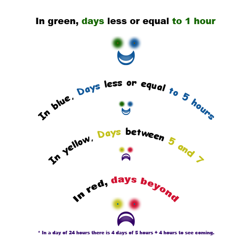
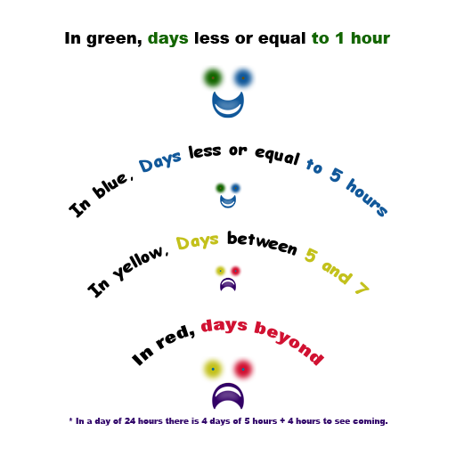

© Monwoo
under M.I.T. Licence.
© Monwoo
under M.I.T. Licence.
Tested under Chrome WebBrowser (vesion 71) with Javascript. May have issue to work under other browsers.
Testé sous Chrome WebBrowser (vesion 71) avec Javascript. Peut présenter des disfonctionnements sous d'autres navigateurs.
Moon Manager est un outil accessible hors connexion vous permettant de suivre et synthétiser vos temps.
Moon Manager is an offline tool allowing you to follow and synthesize your times.
 = 7hr"
/>
= 7hr"
/>
Pour toutes questions, vous aurez peut être une réponse si vous l'envoyez sur service@monwoo.com.
For any question, your may get some answers if you send them to service@monwoo.com.